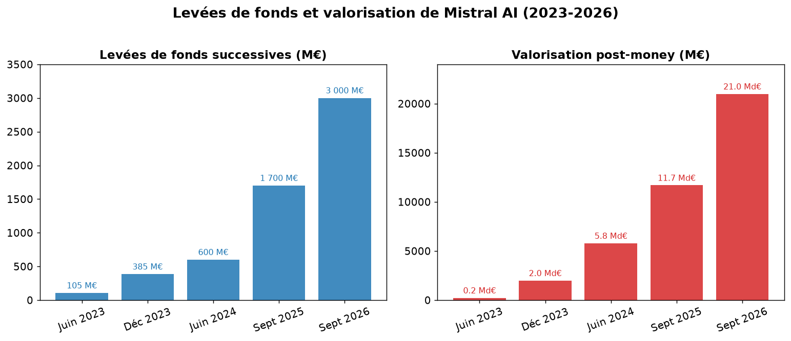
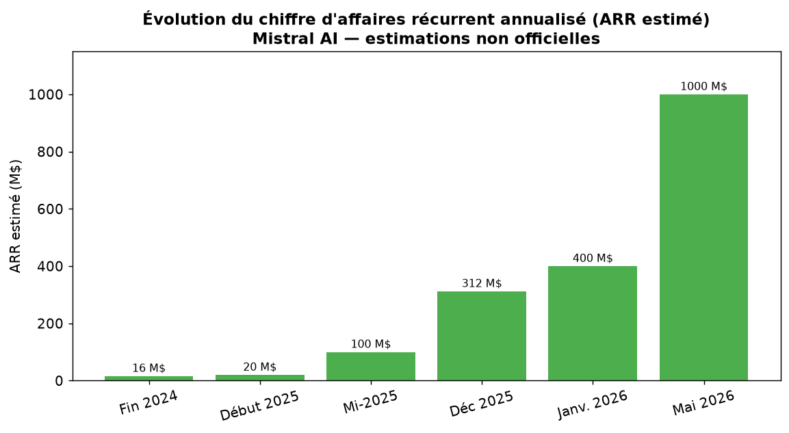

API et Vibe
L'API et la plateforme Vibe (ex-Le Chat) donnent accès aux modèles par abonnement ou facturation à l'usage.
Cette page présente la stratégie commerciale, les revenus estimés, les partenariats et les financements de Mistral AI.
Fondée en avril 2023 par Arthur Mensch, Guillaume Lample et Timothée Lacroix, Mistral AI combine modèles open-weight et modèles propriétaires (Wikipédia).
Les modèles de petite et moyenne taille, comme Ministral et Mistral 7B, sont diffusés sous licence Apache 2.0. Les modèles avancés, comme Mistral Large 2 et Devstral 2, utilisent des licences plus restrictives et peuvent être commercialisés auprès des entreprises. Cette approche permet de développer une communauté tout en monétisant les usages professionnels.

Mistral AI ne publie pas de chiffre d'affaires officiel. Les valeurs ci-dessous sont donc des estimations secondaires. L'ARR, ou chiffre d'affaires récurrent annualisé, projette sur douze mois les revenus récurrents et ne correspond pas exactement au chiffre d'affaires comptable.
Selon Sacra, l'ARR serait passé d'environ 16 millions de dollars fin 2024 à 400 millions en janvier 2026. Des sources secondaires évoquent ensuite un ARR dépassant le milliard de dollars en mai 2026.

| Période | Valeur | Source |
|---|---|---|
| Fin 2024 | ~16 M$ (ARR) | Sacra |
| 2024 | ~30 M€ (CA) | Sifted / Financial Times |
| Début 2025 | ~20 M$ (ARR) | Sacra |
| Mi-2025 | ~100 M$ (ARR) | 24pm |
| Décembre 2025 | ~312 M$ (ARR) | Sacra |
| Janvier 2026 | ~400 M$ (ARR) | Sacra |
| Mai 2026 | ~1 000 M$ (ARR) | Presenc AI |
Les chiffres sont des estimations : Mistral AI n'est pas cotée en bourse et ne publie pas de données financières officielles.
L'API et la plateforme Vibe (ex-Le Chat) donnent accès aux modèles par abonnement ou facturation à l'usage.
Les modèles frontier peuvent être proposés sous licence aux grandes entreprises.
Mistral AI accompagne l'intégration de ses modèles dans les processus des organisations.
Les partenariats commerciaux, notamment avec Microsoft pour Azure, complètent ces revenus. Le résultat net resterait négatif en raison du coût d'entraînement des modèles et des investissements en infrastructure (Entreprisma).
Mistral AI travaille avec Microsoft, ASML, HSBC, CMA CGM, Airbus, EDF et BMW. Ces accords concernent la distribution sur Azure, l'intégration de l'IA dans les métiers et la recherche. Des partenariats de contenu existent aussi avec l'Agence France-Presse et Wikimédia. Le Ministère des Armées collabore avec Mistral dans le domaine de la défense, tandis que Samsung Electronics est entré au capital en septembre 2026.
Les cinq principaux tours de financement en fonds propres représentent près de 5,8 milliards d'euros. À cela s'ajoutent un prêt de 830 millions de dollars pour un datacenter à Bruyères-le-Châtel et un investissement de 1,2 milliard d'euros pour un datacenter en Suède prévu en 2027.
| Date | Montant levé | Valorisation | Investisseurs |
|---|---|---|---|
| Juin 2023 | 105 M€ | ~240 M€ | Lightspeed, Eric Schmidt, Xavier Niel |
| Décembre 2023 | 385 M€ | 2 Md$ | Andreessen Horowitz, BNP Paribas, Salesforce |
| Juin 2024 | 600 M€ | 5,8 Md€ | General Catalyst |
| Septembre 2025 | 1,7 Md€ | 11,7 Md€ | ASML |
| Septembre 2026 | 3 Md€ | 21 Md€ | Samsung Electronics |
En proposant des modèles ouverts, des déploiements sur des réseaux sécurisés et un ancrage français, Mistral AI se présente comme une alternative européenne à OpenAI et Google. Ce positionnement intéresse les gouvernements, la défense et les secteurs régulés comme la finance, l'aérospatial et l'énergie. L'entreprise souhaite ainsi répondre à la demande croissante de solutions d'IA maîtrisables et conformes au droit européen.
Sources principales : Wikipédia, Sacra, Le Monde, TechCrunch, Presenc AI. Les données financières sont des estimations non officielles.